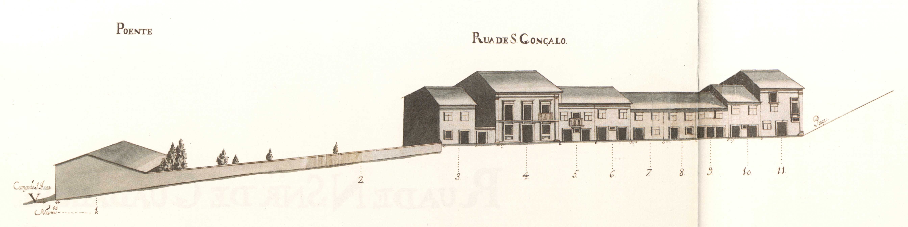
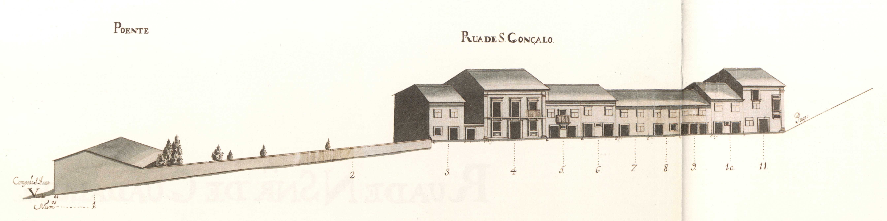
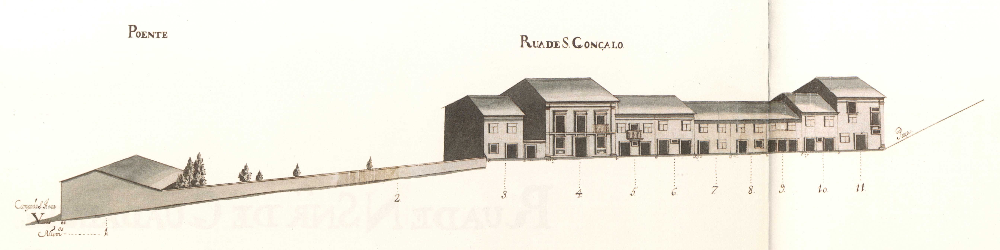
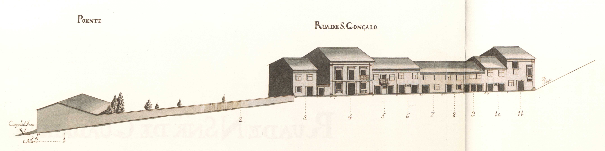

Rua íngreme, pertencente ao complexo urbanístico do campo Novo campo de Santa Ana
Aberta também em 1725 1750 Recolhimento das Convertidas campo de Santa Ana Mosteiro de Vilar de Frades Cabido
A metade Norte da rua, bastante plana, tinha do lado Nascente, uma série de casas térreas (71,5%): o Poente apresentava bastantes diferenças: não só os edifícios são todos de dois pisos como, também, há uma casa, no prazo n.º 4, com um desenho de fachada diferente, mais moderno, próximo dos da praça do Gavião praça do Gavião
Todas as 23 casas aqui apresentadas são prazos do Cabido
Mantém o nome de rua de S. Gonçalo.
Pertence à casa n.º 5 do campo de Sta. Ana
«Chão de casa» do prazo do
Paga foro ao enfiteuta do prazo do
Confronta, do norte, com portal do n.º 4.
O 1725
Adaufe 1725
O 1725
1726
1725
1725
S. Mamede d'Este 1727
A este prazo pertence o n.° 1 da Praça do Gavião 1727 1735
«Chão de casa» do prazo do
1725
1725
1726
1726
1725
1726
1732 Recolhimento de Sta. Maria Madalena
| Número de porta | Enfiteuta |
|---|---|
| 1 | D. Agostinha Maria de Barros Gavião, enfiteuta principal do prazo do casal dos Chãos ou Quinteiro |
| 2 | D. Agostinha Maria de Barros Gavião, enfiteuta principal do prazo do casal dos Chãos ou Quinteiro |
| 3 | D. Agostinha Maria de Barros Gavião, enfiteuta principal do prazo do casal dos Chãos ou Quinteiro |
| 4 | D. Agostinha Maria de Barros Gavião, enfiteuta principal do prazo do casal dos Chãos ou Quinteiro |
| 5 | D. Agostinha Maria de Barros Gavião, enfiteuta principal do prazo do casal dos Chãos ou Quinteiro |
| 6 | D. Agostinha Maria de Barros Gavião, enfiteuta principal do prazo do casal dos Chãos ou Quinteiro |
| 7 | D. Agostinha Maria de Barros Gavião, enfiteuta principal do prazo do casal dos Chãos ou Quinteiro |
| 8 | D. Agostinha Maria de Barros Gavião, enfiteuta principal do prazo do casal dos Chãos ou Quinteiro |
| 9 | D. Agostinha Maria de Barros Gavião, enfiteuta principal do prazo do casal dos Chãos ou Quinteiro |
| 10 | D. Agostinha Maria de Barros Gavião, enfiteuta principal do prazo do casal dos Chãos ou Quinteiro |
| 11 | D. Agostinha Maria de Barros Gavião, enfiteuta principal do prazo do casal dos Chãos ou Quinteiro |
| 12 | D. Agostinha Maria de Barros Gavião, enfiteuta principal do prazo do casal dos Chãos ou Quinteiro |
| 13 | D. Agostinha Maria de Barros Gavião, enfiteuta principal do prazo do casal dos Chãos ou Quinteiro |
| 14 | D. Agostinha Maria de Barros Gavião, enfiteuta principal do prazo do casal dos Chãos ou Quinteiro |
| 15 | D. Agostinha Maria de Barros Gavião, enfiteuta principal do prazo do casal dos Chãos ou Quinteiro |
| 16 e 17 | D. Agostinha Maria de Barros Gavião, enfiteuta principal do prazo do casal dos Chãos ou Quinteiro |
| 18 | D. Agostinha Maria de Barros Gavião, enfiteuta principal do prazo do casal dos Chãos ou Quinteiro |
| 19 e 20 | D. Agostinha Maria de Barros Gavião, enfiteuta principal do prazo do casal dos Chãos ou Quinteiro |
| 21 e 26 | D. Agostinha Maria de Barros Gavião, enfiteuta principal do prazo do casal dos Chãos ou Quinteiro |